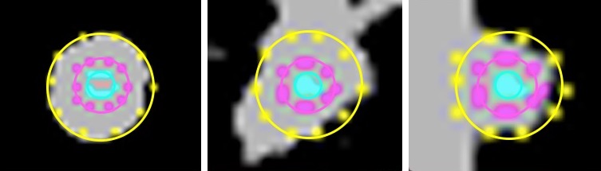

Lung Nodule Classification
At the University of Central Florida's Center for Research in Computer Vision, under the direction of Dr. Ulas Bagci, I implemented hand crafted features for lung nodule detection and classfication. Hand crafted features were obtained from modified methods of bag of frequencies, and taxonomic indices. We included a robust radius estimation algorithm that resulted in an average error of 1.29 pixels.
We compared hand-crafted features with features extracted from a pre-trained deep convolutional neural network (CNN) on lung cancer diagnosis. Our results suggest that specifically designed hand-crafted features can have comparable performance to off-the-shelf deep features. Furthermore, by doing a majority voting we showed that these two groups of features act complementary. REU Paper REU Poster
This work was presented in:
- N. Khosravan, W. L. Richey, U. Bagci. “How Deep Can Hand Crafted Features Be?" In IEEE International Engineering in Medicine and Biology Conference (EMBC), 2018.
Automated Cell Transfer Validation
For my undergraduate thesis at the Tulane University, under the direction of Dr. Doug Chrissey, I worked on an automatic classification of cell transfers for 3D bioprinting. Real time cell transfer validation through print ribbon image analysis would allow users to tune laser parameters time-efficiently, and reprint voxels that failed on the first attempt. Because the print ribbon dries out in approximately 30 minutes, manual examination through visual or microscope analysis takes valuable time away from printing and traversing the print ribbon to determine regions of interest. Current methods of cell transfer validation cost valuable time and decrease accuracy of printed constructs.
Eight print ribbon images were taken before and after cell voxel transfers. Data augmentation of cropping, rotation, mirroring and normalization resulted in 1344 samples with 67% negative and 33% positive samples.Features were extracted from print ribbon images using a pre-trained neural network GoogLeNet, inception v-3, and these features were classified using a support vector machine (SVM). Our radial kernel SVM classifier achieved 100% sensitivity, 71.5% specificity. Our second degree polynomial kernel SVM had an overall accuracy of 83%. The accuracy of this preliminary work shows feasiblity for a network trained on more images. The method could be expanded and implemented in a closed feedback loop to achieve consistent and reliable cell transfer, eliminating user guesswork and saving time.
This work was included in a publication by S.C Sklare:
- S.C. Sklare, W. L. Richey, B.T. Vinson, D.B. Chrisey. “Directed self-assembly software for single cell deposition." International Journal of Bioprinting, 3(2), 2017.